概述
- 本篇总结vue.js的使用
一 基础语法
1 组件
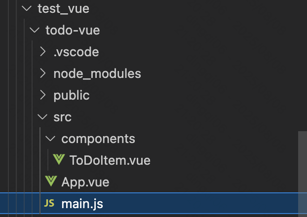
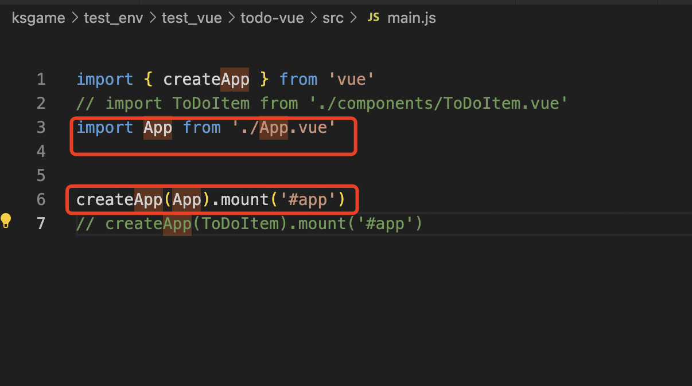
-
.vue结尾的文件是组件
-
可以在src/main.js和.vue组件
import 组件名 from '组件位置', 上面第3行和第6行是互相配合的一对，第2行和第7行是互相配合的一对, 如果把第3行和第6行注释掉，把第2行和第7行注释打开 也是可以正常运行的 -
组件是类似python class，是可以有多个实例的。多个实例共享props属性，但是多个实例各自有独立的data属性
-
- 组件有props属性
-
- 组件有data属性，props属性是一个对象，data属性是一个函数
export default {
props: {
label: { required: true, type: String },
done: { default: false, type: Boolean },
},
data() {
return {
isDone: this.done,
};
},
};
Vue 在这里做了一点魔术 — 它把你所有的 props 直接绑定到组件实例上，所以我们不必调用 this.props.done。它还将其他属性（你已经看到 data，以及其他 methods，computed 等）直接绑该定到实例。这部分是为了使它们可用于的你模板。这样做的缺点是，你需要在这些属性中保持键的唯一性。这就是为什么我们将 data 属性为 isDone 而不是 done。
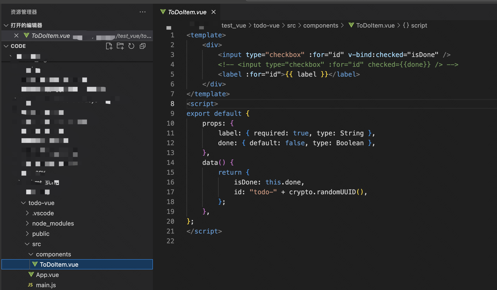
- 类似
ToDoItem.vue就是一个组件, 这个组件有很多属性, 包括data、props、methods、computed等 -
- methods 是定义一些方法
-
- computed是从 data属性里计算出来的属性, 并且会自动充分利用缓存(也就是必要的情况下才会重新计算和渲染页面元素)
-
- props 是一种单向数据绑定，组件永远不该改变自己的 props 的值. 其他组件可以向子组件传递props
2 v-bind指令
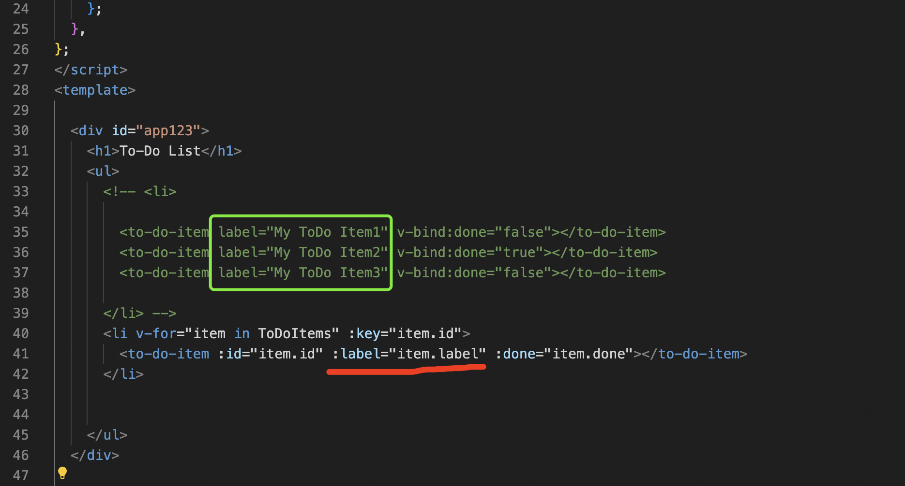
- 上面绿色框里, label没有用v-bind, 那只能向子组件传递字符串
- 下面红色框里, label用了v-bind, 就会先从本组件实例的data属性取出这个值, 再向子组件传递
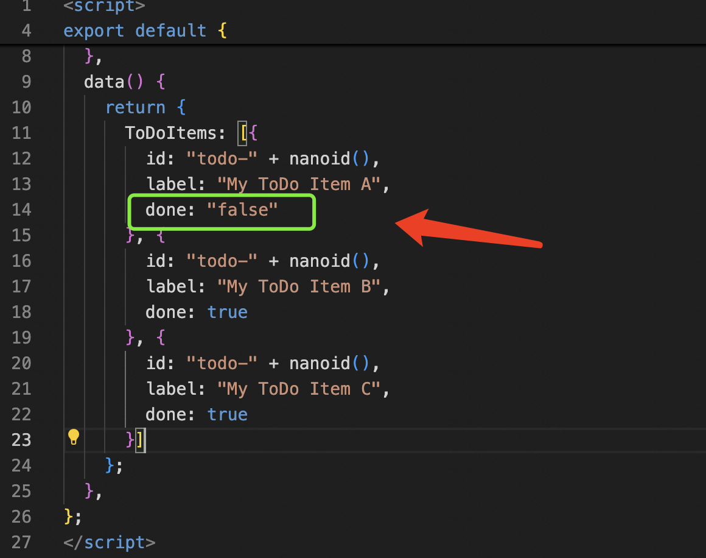
- 上面绿色框里, 其实done属性是一个字符串, 而ToDoItem.vue里是拿它作为Boolean的,字符串不为空的情况自动会算为true, 因此组件页面出现了这个情况: 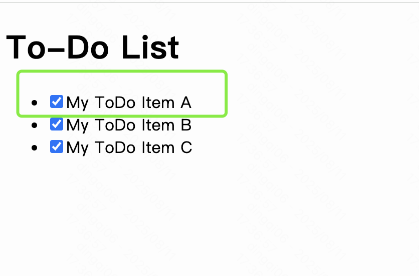
2.1 默认不用v-bind的情况
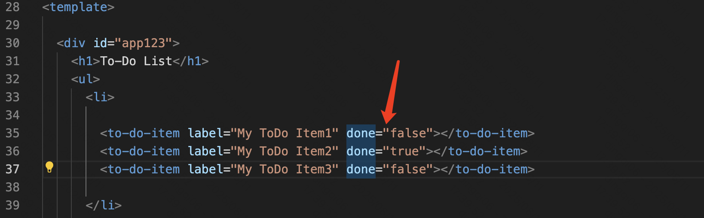
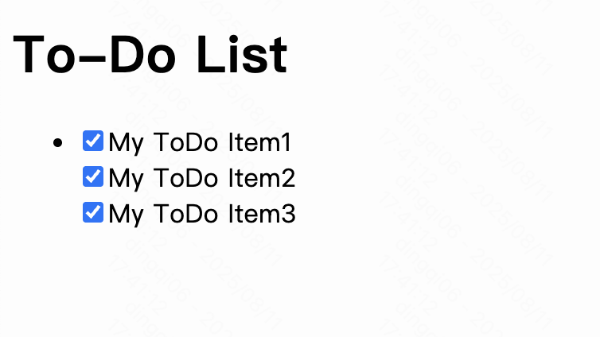
- 经过props传递后、完全当字符串处理, 因此都当true
2.1 默认用v-bind的情况
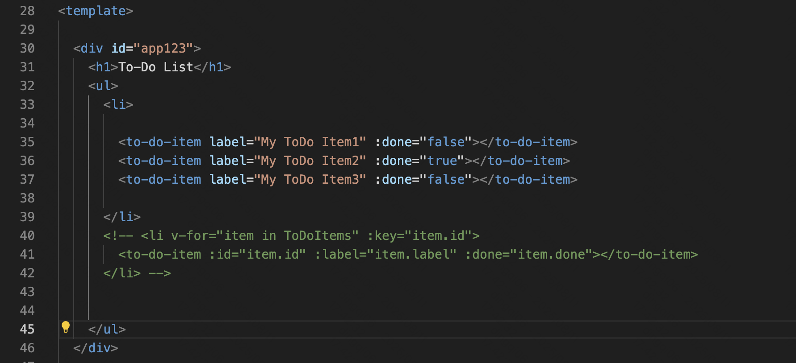
也就是v-bind提取值的时候, 是可以正确区分字符串还是布尔值.
当然也可能是: 子组件被父组件import进来, 父组件的done属性自动绑定到了this对象里. 总体该条可能性比较少
总之v-bind有两项重要作用, 一是组件的template模块中可以取到本组件data属性中的值, 二是向子组件传递props时可正常区分布尔值
3 大括号使用
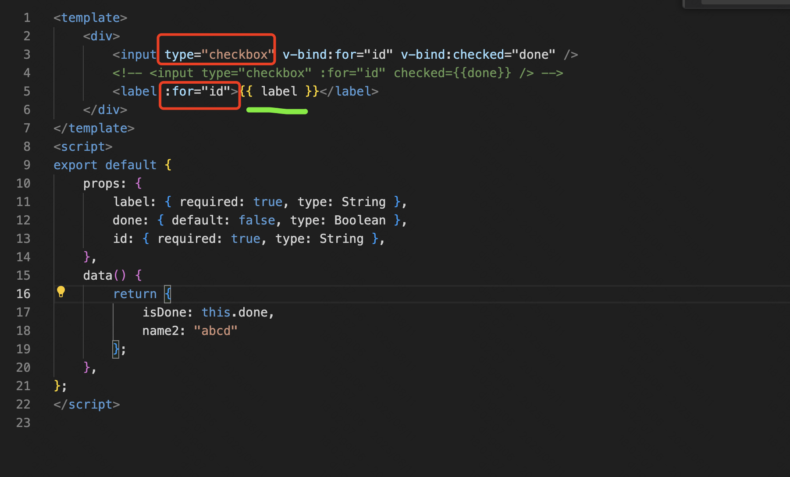
- 在HTML元素内部红色框那些位置, 只可使用原始的HTML技能或者类似v-bind,v-for等指令
- 在HTML元素中间绿色框那些位置, 可直接使用大扩号进行文本渲染
4 v-model使用
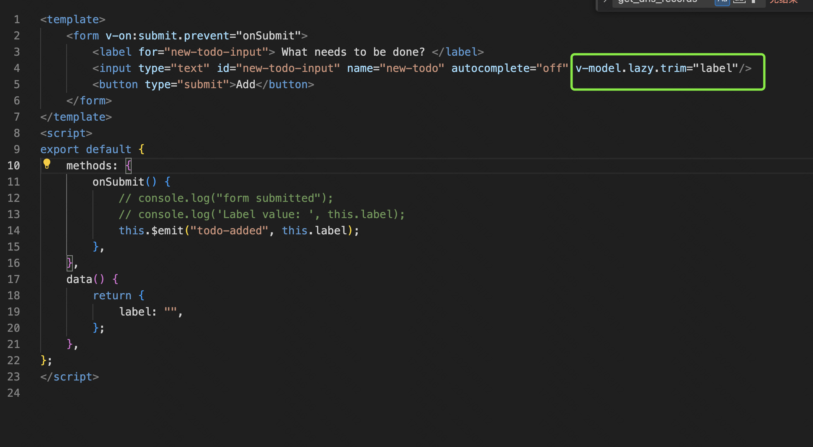
- v-model是template的HTML元素中, 向data属性写入值的, key就是data属性的某个key
- v-bind是template的HTML元素中, 向data属性读取值的, key就是data属性的某个key
5 子组件向父组件传递消息
5.1 普通
- App.vue 先监听事件, 收到todo-added事件时, 执行addToDo函数
<to-do-form @todo-added="addToDo"></to-do-form>
- 子组件在有需要的地方,发送事件
this.$emit("todo-added");
5.2 二层
<to-do-item-edit-form>组件 向<to-do-item>组件传递item-edited消息, 进一步<to-do-item>组件向App组件传递item-edited消息,App组件里接收语句如下, 特意有一个$event变量: 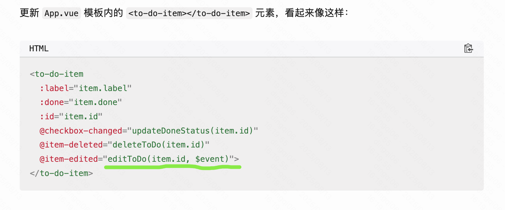
6 $nextTick()方法
- Vue 组件有一个特殊的方法，叫做 $nextTick()。这个方法接受一个回调函数，然后在 DOM 更新后执行。
- 参考这里, 这种方法还是要多实践才行
二 vue.js整体心得
1.1 基础
- 它应该是先处理props, 再处理data
- props里所有的key, 都会set到data对象里. 类似data对象是python的一个dict, 它后台会执行一遍:
for key in props:
data[key] = props.get(key)
- 所以props里的key, 不要和data里的key名字重复
- 实际上所有.vue文件, 被称为组件, 每个组件其实就类似python class, 用户负责编写和继承class, 而Vue框架提供了各种生命周期函数、以及class的3个基本要素:
template、script、style - 所有.vue文件, 要满足驼峰命名. 比如
HelloWorld.vue、NewOne.vue, 像New1.vue这种不行
1.2 vue.js 组件生命周期
-
Vue 组件经历了一系列的事件，被称为生命周期。这个生命周期从元素被创建并添加到 VDOM（mounted）之前，一直到它们被从 VDOM 中移除（destroyed）。
-
Vue 让你在这个生命周期的不同阶段使用生命周期方法运行方法。这对于像数据获取这样的事情很有用，你可能需要在组件渲染之前，或者在一个属性改变之后获取数据。下面是生命周期方法的列表，按照它们被触发的顺序排列。
beforeCreate()：在你的组件的实例被创建之前运行。数据和事件尚不可用。
created()：在你的组件被初始化后，但在组件被添加到 VDOM 前运行。这通常是数据获取发生的地方。
beforeMount()：在你的模板被编译后，但在你的组件被渲染到实际的 DOM 前运行。
mounted()：在你的组件被安装到 DOM 后运行。可以在这里访问 refs。
beforeUpdate()：当你的组件中的数据发生变化时，但在变化被渲染到 DOM 之前，就会运行。
updated()：只要你的组件中的数据发生变化，并且在变化被渲染到 DOM 之后，就会运行。
beforeDestroy()：在一个组件从 DOM 中移除之前运行。
destroyed()：在一个组件被从 DOM 中移除后运行。
三 环境初始化
1 MacOS 如何初始化前端开发环境
1.1 安装NPM和node.js
- 参考这里
# Download and install nvm:
curl -o- https://raw.githubusercontent.com/nvm-sh/nvm/v0.40.3/install.sh | bash
# in lieu of restarting the shell
\. "$HOME/.nvm/nvm.sh"
# Download and install Node.js:
nvm install 22
# Verify the Node.js version:
node -v # Should print "v22.18.0".
nvm current # Should print "v22.18.0".
# Verify npm version:
npm -v # Should print "10.9.3".
- 成功安装后, 如下图所示:
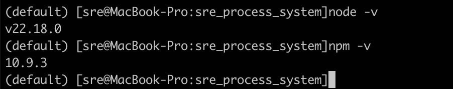
1.2 初始化新项目
npm create vue@latest
进行选择, 只保留最后两个yes, 其他都是no
✔ Project name: … todo-vue
✔ Add TypeScript? … No
✔ Add JSX Support? … No
✔ Add Vue Router for Single Page Application development? … No
✔ Add Pinia for state management? … No
✔ Add Vitest for Unit Testing? … No
✔ Add an End-to-End Testing Solution? › No
✔ Add ESLint for code quality? … Yes
? Add Prettier for code formatting? › Yes
选择这些选项后，你的项目结构就配置完成了，依赖项也定义在了 package.json 文件中。接下来的步骤是安装依赖项和启动服务器，工具会方便地打印出所需的命令：
Scaffolding project in /path/to/todo-vue...
Done. Now run:
cd todo-vue
npm install
npm run format
npm run dev
四 ToDo
五 不同初始化方式对比
较新的初始化方式
npm create vite@latest
◇ Project name:
│ vite-project
│
◇ Select a framework:
│ Vue
│
◇ Select a variant:
│ TypeScript
│
◇ Scaffolding project in /Users/sre/Desktop/code/ksgame/test_env/test_vue/vite-project...
│
└ Done. Now run:
cd vite-project
npm install
npm run dev
较旧的初始化方式
vue create hello-world
cd hello-world/
npm run serve
- 安装http请求库
npm install --save axios vue-axios
npm install vue-router --save
npm install vuex --save
新旧对比
| 特性 | npm create vue@latest |
vue create hello-world |
|---|---|---|
| 底层工具 | Vite | Vue CLI (基于 Webpack) |
| 构建速度 | 极快 (利用 ES modules 和原生浏览器支持) | 较慢 (尤其是在大型项目中) |
| 现代化程度 | 新一代，面向未来 | 旧一代，现已处于维护模式 |
| UI图形界面 | 暂无 | 有 |
- 暂时选用vue这套方案
六 ToDo
七 ToDo
八 各种vue插件
- vue是核心模块, 其余都是插件
A vue-router
- 核心模型，全局对象： router
- 一个router里面包含多个路由规则，路由规则即route
- 每个route有多个属性，比如path,component,name,children
1 基本使用
npm install vue-router --save
- 新建src/router/index.js , 内容如下:
import { createRouter, createWebHashHistory } from "vue-router";
import DemoOne from '../components/DemoOne.vue'
import DemoTwo from '../components/DemoTwo.vue'
const routes = [
{path: '/demo1',component: DemoOne, name: 'demo1'},
{path: '/demo2',component: DemoTwo, name: 'demo2'},
]
const router = createRouter({
history: createWebHashHistory(),
routes: routes
})
export default router
- src/main.js, 内容如下
import { createApp } from 'vue'
import VueAxios from 'vue-axios';
import axios from 'axios';
import App from './App.vue'
import router from './router';
import ElementUI from 'element-plus'; // 引入Element Plus配置
import "element-plus/dist/index.css"
const one = createApp(App)
one.use(VueAxios,axios);
one.use(ElementUI);
one.use(router);
one.mount('#app')
- App.vue, 内容如下
<template>
<router-link :to="{name: 'demo1'}">页面一</router-link> <!--其中name是route的name-->
<router-link :to="{name: 'demo2'}">页面二</router-link>
<router-view></router-view>
</template>
2 高级功能
2.1 父组件向子组件传参数
子组件内可以用$route变量获取参数
<template>
<h1>{{$route.params.username}}</h1>
</template>
2.2 路由多层嵌套
const routes = [
{path: '/demo1',component: DemoOne, name: 'demo1',
children:[
{path:'friends/:count', component: Friends},
]
},
{path: '/demo2',component: DemoTwo, name: 'demo2'},
]
2.3 页面导航
this.$router.push
this.$router.go(-1)
2.4 路由重定向
- redirect的使用
const routes = [
{path: '/demo1',component: DemoOne, name: 'demo1'},
{path: '/d/1',redirect: '/demo1'},
]
2.5 路由导航守卫
- 主要就是路由跳转前、后的勾子函数, 勾子函数可以做很多事情、比如打印日志、进行拦截等等
const router = createRouter({
history: createWebHashHistory(),
routes: routes
})
router.beforeEach((to,from)=>{
console.log(to)
console.log(from)
return false // 会拒绝跳转
})
2.6 动态路由
this.$router.addRoute
B vuex
1 是什么
- vuex总体来说就是一个store对象, 该对象可以在全局所有组件(.vue文件)中共享数据和状态, 让所有组件同时改变行为
2 为什么
- 默认vue的数据和状态传递有两种方式:
-
- 1 父组件向子组件传递props, props在子组件中是只读的
-
- 2 子组件向父组件传递数据和状态, 可以通过
this.$emit("event-name");发送事件
- 2 子组件向父组件传递数据和状态, 可以通过
在项目变得越来越大的时候, 这种数据和状态传递方式会变得低效、并且使得代码复杂度越来越高.
3 怎么办
- main.js
const StoreInstance = createStore({
state() {
return {
count: 0
}
},
mutations: {
increment(state, payload) {
state.count += payload.count
}
}
})
AppInstance.use(StoreInstance);
- 各个组件
<template>
<h1>计数器2: {{ this.$store.state.count}} </h1>
<el-button type="info" @click="increment">增加</el-button>
</template>
<script>
export default {
name: 'DoCountTwo',
data() {
return {
count: 0,
}
},
methods: {
increment() {
this.$store.commit({type: 'increment',
count: 2})
}
}
};
</script>
这样只要在一个组件里点了这个Button，所有组件的this.$store.state.count都会改变
3.1 store对象的一些高级属性
- Getter方法 ---> 可以用于增加store实例里的计算属性
- Mutation方法 ---> 开发者改变store实例里数据的唯一方法
- Action方法 ---> Mutation方法是同步的, 为了实现异步功能，因此多了Action方法
- Module ---> 可以把store实例进行进一步拆分,类似vue-router里多层嵌套(子路由)的概念, 每个store实例下可以有多个module实例，每个module实例都可以有自己的Getter、Mutation、Action，并且每个Module实例可以对应不同的组件(.vue文件), 从而实现组件状态的拆分
C element-plus
UI库(Element Plus)
前端界面要做的漂亮，离不开UI库的支持，基于Vue的UI库有很多，其中较为出名的，要数Element。Element是由饿了么公司出品的开源的UI库，它有两个版本：
- Element UI：基于Vue2
- Element Plus：基于Vue3
我们选择了Vue3，就需要安装Element Plus：
npm install element-plus --save
在main.ts或者main.js中新增
import ElementUI from 'element-plus'; // 引入Element Plus配置
import "element-plus/dist/index.css"
const app = createApp(App);
app.use(ElementUI);